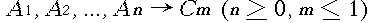

マ シ ン：UNIX/PC 環 境：UNIX/MS-DOS 言 語：Prolog ソース量：60 KB 文 書：ユーザーズマニュアル (日本語／英語)

ここで、→の左側（前件部）はアトムの連言（，）である。n=0の時は、初期 モデル（ファクト群）を表し、m=0の時、矛盾を表す。初期モデルを種とし、 上記の節に従って左辺から右辺へ前向きに推論が進められる。後件部は高々一 つのアトムからなるので、ケース分割は生じない。
ＭＧＴＰ／Ｎでは、節に対し「後件部に現れる変数は、全て前件部に現れる」 という値域限定性の制約を課していないため、証明途中で生成されるアトムは 変数を含みうる。この場合単一化が必要となるが、その健全性を保証するため Prologで書かれたオカーチェック付きユニファイアが提供される。本版では、 制せされたアトムは(Prologの)assert機能によって登録・検索が行われる。
ホーン節しか扱っていないが、分離の規則に関する問題をはじめとした多くの 数学的問題を解くことができる。また、ＫＬ１コンパイラ開発におけるモード 解析といった実用的な応用にも使用されている。